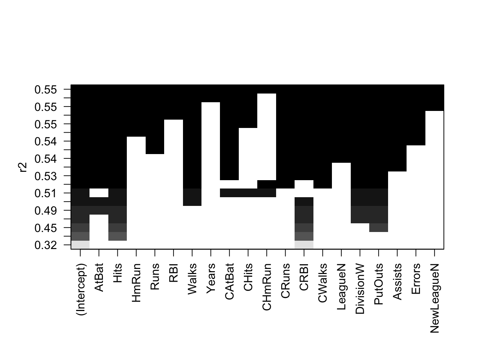
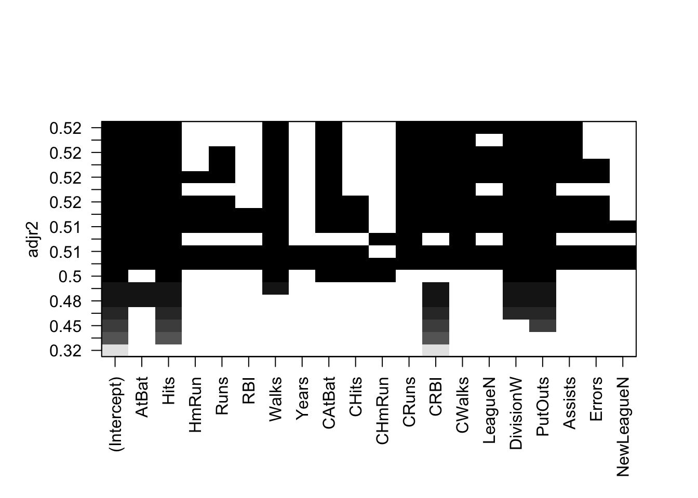
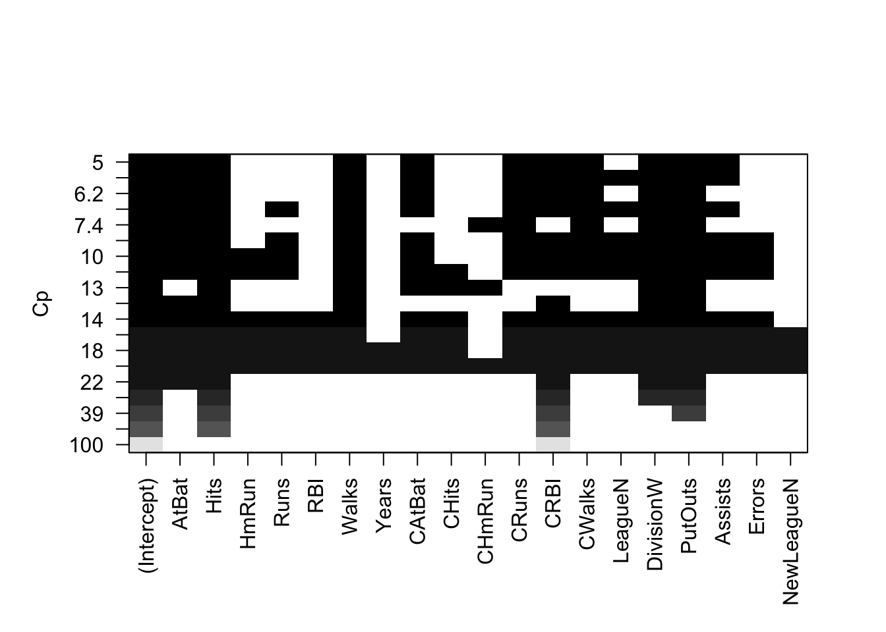
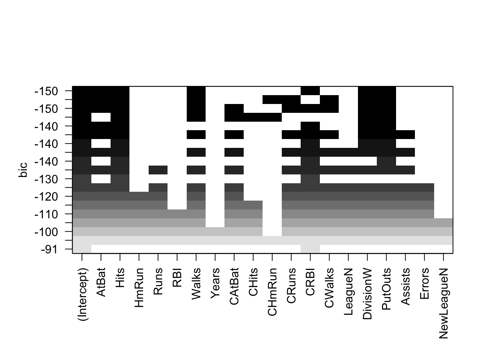
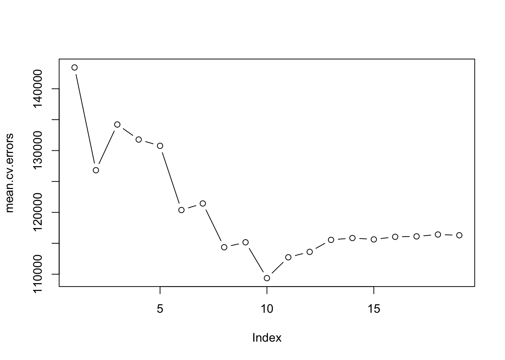
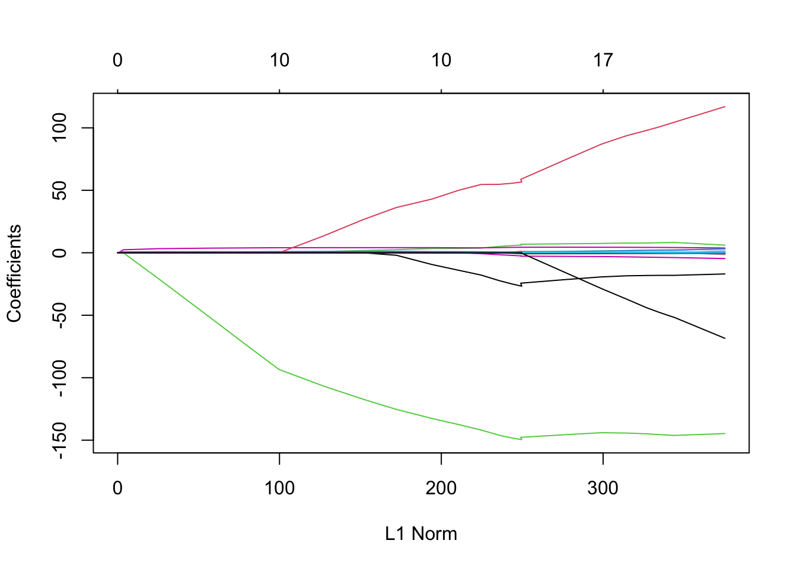

Here we apply the best subset selection approach to the Hitters data. We wish to predict a baseball player’s Salary on the basis of various statistics associated with performance in the previous year.
First of all, we note that the Salary variable is missing for some of the players. The is.na() function can be used to identify the missing observations. It returns a vector of the same length as the input vector, with a TRUE for any elements that are missing, and a FALSE for non-missing elements. The sum() function can then be used to count all of the missing elements.
Hence we see that Salary is missing for \(59\) players. The na.omit() function removes all of the rows that have missing values in any variable.
Hitters <-na.omit(Hitters)dim(Hitters)
[1] 263 20
sum(is.na(Hitters))
[1] 0
The regsubsets() function (part of the leaps library) performs best subset selection by identifying the best model that contains a given number of predictors, where best is quantified using RSS. The syntax is the same as for lm(). The summary() command outputs the best set of variables for each model size.
An asterisk indicates that a given variable is included in the corresponding model. For instance, this output indicates that the best two-variable model contains only Hits and CRBI. By default, regsubsets() only reports results up to the best eight-variable model. But the nvmax option can be used in order to return as many variables as are desired. Here we fit up to a 19-variable model.
regfit.full <-regsubsets(Salary ~ ., data = Hitters,nvmax =19)reg.summary <-summary(regfit.full)
The summary() function also returns \(R^2\), RSS, adjusted \(R^2\), \(C_p\), and BIC. We can examine these to try to select the best overall model.
For instance, we see that the \(R^2\) statistic increases from \(32 \%\), when only one variable is included in the model, to almost \(55 \%\), when all variables are included. As expected, the \(R^2\) statistic increases monotonically as more variables are included.
Error in df %>% pivot_longer(cols = c(adjR2, rss, Cp, BIC), names_to = "Metric", : could not find function "%>%"
df_long %>%ggplot(aes(x = Variables, y = Value)) +geom_line() +facet_wrap(~Metric, scales ="free_y") +labs(x ="Number of Variables", y ="Value") +theme_minimal()
Error in df_long %>% ggplot(aes(x = Variables, y = Value)): could not find function "%>%"
The which.max() function can be used to identify the location of the maximum point of a vector. We will now plot a red dot to indicate the model with the largest adjusted \(R^2\) statistic.
max_index <-which.max(df$adjR2)df %>%ggplot(aes(x = Variables, y = adjR2)) +geom_line() +geom_point(aes(x = max_index, y = adjR2[max_index]),color ="red", size =4, shape =20) +labs(x ="Number of Variables", y ="Adjusted R²") +theme_minimal()
Error in df %>% ggplot(aes(x = Variables, y = adjR2)): could not find function "%>%"
In a similar fashion we can plot the \(C_p\) and BIC statistics, and indicate the models with the smallest statistic using which.min().
min_cp <-which.min(df$Cp)min_bic <-which.min(df$BIC)df %>%ggplot(aes(x = Variables, y = Cp)) +geom_line() +geom_point(aes(x = min_cp, y = Cp[min_cp]),color ="red", size =4, shape =20) +labs(x ="Number of Variables", y ="Cp") +theme_minimal()
Error in df %>% ggplot(aes(x = Variables, y = Cp)): could not find function "%>%"
df %>%ggplot(aes(x = Variables, y = BIC)) +geom_line() +geom_point(aes(x = min_bic, y = BIC[min_bic]),color ="red", size =4, shape =20) +labs(x ="Number of Variables", y ="BIC") +theme_minimal()
Error in df %>% ggplot(aes(x = Variables, y = BIC)): could not find function "%>%"
The regsubsets() function has a built-in plot() command which can be used to display the selected variables for the best model with a given number of predictors, ranked according to the BIC, \(C_p\), adjusted \(R^2\), or AIC. To find out more about this function, type ?plot.regsubsets.
plot(regfit.full, scale ="r2")

plot(regfit.full, scale ="adjr2")

plot(regfit.full, scale ="Cp")

plot(regfit.full, scale ="bic")

The top row of each plot contains a black square for each variable selected according to the optimal model associated with that statistic. For instance, we see that several models share a BIC close to \(-150\). However, the model with the lowest BIC is the six-variable model that contains only AtBat, Hits, Walks, CRBI, DivisionW, and PutOuts. We can use the coef() function to see the coefficient estimates associated with this model.
We can also use the regsubsets() function to perform forward stepwise or backward stepwise selection, using the argument method = "forward" or method = "backward".
regfit.fwd <-regsubsets(Salary ~ ., data = Hitters,nvmax =19, method ="forward")summary(regfit.fwd)
For instance, we see that using forward stepwise selection, the best one-variable model contains only CRBI, and the best two-variable model additionally includes Hits. For this data, the best one-variable through six-variable models are each identical for best subset and forward selection. However, the best seven-variable models identified by forward stepwise selection, backward stepwise selection, and best subset selection are different.
Choosing Among Models Using the Validation-Set Approach and Cross-Validation
We just saw that it is possible to choose among a set of models of different sizes using \(C_p\), BIC, and adjusted \(R^2\). We will now consider how to do this using the validation set and cross-validation approaches.
In order for these approaches to yield accurate estimates of the test error, we must use only the training observations to perform all aspects of model-fitting—including variable selection. Therefore, the determination of which model of a given size is best must be made using only the training observations. This point is subtle but important. If the full data set is used to perform the best subset selection step, the validation set errors and cross-validation errors that we obtain will not be accurate estimates of the test error.
Notice that we subset the Hitters data frame directly in the call in order to access only the training subset of the data, using the expression Hitters[train, ]. We now compute the validation set error for the best model of each model size. We first make a model matrix from the test data.
test.mat <-model.matrix(Salary ~ ., data = Hitters[test, ])
The model.matrix() function is used in many regression packages for building an “X” matrix from data. Now we run a loop, and for each size i, we extract the coefficients from regfit.best for the best model of that size, multiply them into the appropriate columns of the test model matrix to form the predictions, and compute the test MSE.
val.errors <-rep(NA, 19)for (i in1:19) { coefi <-coef(regfit.best, id = i) pred <- test.mat[, names(coefi)] %*% coefi val.errors[i] <-mean((Hitters$Salary[test] - pred)^2)}
We find that the best model is the one that contains seven variables.
This was a little tedious, partly because there is no predict() method for regsubsets(). Since we will be using this function again, we can capture our steps above and write our own predict method.
predict.regsubsets <-function(object, newdata, id, ...) { form <-as.formula(object$call[[2]]) mat <-model.matrix(form, newdata) coefi <-coef(object, id = id) xvars <-names(coefi) mat[, xvars] %*% coefi }
Our function pretty much mimics what we did above. The only complex part is how we extracted the formula used in the call to regsubsets(). We demonstrate how we use this function below, when we do cross-validation.
Finally, we perform best subset selection on the full data set, and select the best seven-variable model. It is important that we make use of the full data set in order to obtain more accurate coefficient estimates.
Note that we perform best subset selection on the full data set and select the best seven-variable model, rather than simply using the variables that were obtained from the training set, because the best seven-variable model on the full data set may differ from the corresponding model on the training set.
regfit.best <-regsubsets(Salary ~ ., data = Hitters,nvmax =19)coef(regfit.best, 7)
In fact, we see that the best seven-variable model on the full data set has a different set of variables than the best seven-variable model on the training set.
We now try to choose among the models of different sizes using cross-validation. This approach is somewhat involved, as we must perform best subset selection within each of the\(k\) training sets. Despite this, we see that with its clever subsetting syntax, R makes this job quite easy. First, we create a vector that allocates each observation to one of \(k=10\) folds, and we create a matrix in which we will store the results.
Now we write a for loop that performs cross-validation. In the \(j\)th fold, the elements of folds that equal j are in the test set, and the remainder are in the training set. We make our predictions for each model size (using our new predict() method), compute the test errors on the appropriate subset, and store them in the appropriate slot in the matrix cv.errors. Note that in the following code R will automatically use our predict.regsubsets() function when we call predict() because the best.fit object has class regsubsets.
for (j in1:k) { best.fit <-regsubsets(Salary ~ .,data = Hitters[folds != j, ],nvmax =19)for (i in1:19) { pred <-predict(best.fit, Hitters[folds == j, ], id = i) cv.errors[j, i] <-mean((Hitters$Salary[folds == j] - pred)^2) } }
This has given us a \(10 \times 19\) matrix, of which the \((j,i)\)th element corresponds to the test MSE for the \(j\)th cross-validation fold for the best \(i\)-variable model. We use the apply() function to average over the columns of this matrix in order to obtain a vector for which the \(i\)th element is the cross-validation error for the \(i\)-variable model.
par(mfrow =c(1, 1))plot(mean.cv.errors, type ="b")

We see that cross-validation selects a 10-variable model. We now perform best subset selection on the full data set in order to obtain the 10-variable model.
reg.best <-regsubsets(Salary ~ ., data = Hitters,nvmax =19)coef(reg.best, 10)
We will use the glmnet package in order to perform ridge regression and the lasso. The main function in this package is glmnet(), which can be used to fit ridge regression models, lasso models, and more. This function has slightly different syntax from other model-fitting functions that we have encountered thus far in this book. In particular, we must pass in an x matrix as well as a y vector, and we do not use the y ~ x syntax. We will now perform ridge regression and the lasso in order to predict Salary on the Hitters data. Before proceeding ensure that the missing values have been removed from the data, as described in Section 6.5.1.
x <-model.matrix(Salary ~ ., Hitters)[, -1]y <- Hitters$Salary
The model.matrix() function is particularly useful for creating x; not only does it produce a matrix corresponding to the \(19\) predictors but it also automatically transforms any qualitative variables into dummy variables. The latter property is important because glmnet() can only take numerical, quantitative inputs.
Ridge Regression
The glmnet() function has an alpha argument that determines what type of model is fit. If alpha=0 then a ridge regression model is fit, and if alpha=1 then a lasso model is fit. We first fit a ridge regression model.
By default the glmnet() function performs ridge regression for an automatically selected range of \(\lambda\) values. However, here we have chosen to implement the function over a grid of values ranging from \(\lambda=10^{10}\) to \(\lambda=10^{-2}\), essentially covering the full range of scenarios from the null model containing only the intercept, to the least squares fit. As we will see, we can also compute model fits for a particular value of \(\lambda\) that is not one of the original grid values. Note that by default, the glmnet() function standardizes the variables so that they are on the same scale. To turn off this default setting, use the argument standardize = FALSE.
Associated with each value of \(\lambda\) is a vector of ridge regression coefficients, stored in a matrix that can be accessed by coef(). In this case, it is a \(20 \times 100\) matrix, with \(20\) rows (one for each predictor, plus an intercept) and \(100\) columns (one for each value of \(\lambda\)).
dim(coef(ridge.mod))
[1] 20 100
We expect the coefficient estimates to be much smaller, in terms of \(\ell_2\) norm, when a large value of \(\lambda\) is used, as compared to when a small value of \(\lambda\) is used. These are the coefficients when \(\lambda=11{,}498\), along with their \(\ell_2\) norm:
In contrast, here are the coefficients when \(\lambda=705\), along with their \(\ell_2\) norm. Note the much larger \(\ell_2\) norm of the coefficients associated with this smaller value of \(\lambda\).
We can use the predict() function for a number of purposes. For instance, we can obtain the ridge regression coefficients for a new value of \(\lambda\), say \(50\):
predict(ridge.mod, s =50, type ="coefficients")[1:20, ]
We now split the samples into a training set and a test set in order to estimate the test error of ridge regression and the lasso. There are two common ways to randomly split a data set. The first is to produce a random vector of TRUE, FALSE elements and select the observations corresponding to TRUE for the training data. The second is to randomly choose a subset of numbers between \(1\) and \(n\); these can then be used as the indices for the training observations. The two approaches work equally well. We used the former method in Section 6.5.1. Here we demonstrate the latter approach.
We first set a random seed so that the results obtained will be reproducible.
Next we fit a ridge regression model on the training set, and evaluate its MSE on the test set, using \(\lambda=4\). Note the use of the predict() function again. This time we get predictions for a test set, by replacing type="coefficients" with the newx argument.
The test MSE is \(142{,}199\). Note that if we had instead simply fit a model with just an intercept, we would have predicted each test observation using the mean of the training observations. In that case, we could compute the test set MSE like this:
mean((mean(y[train]) - y.test)^2)
[1] 224669.9
We could also get the same result by fitting a ridge regression model with a very large value of \(\lambda\). Note that 1e10 means \(10^{10}\).
ridge.pred <-predict(ridge.mod, s =1e10, newx = x[test, ])mean((ridge.pred - y.test)^2)
[1] 224669.8
So fitting a ridge regression model with \(\lambda=4\) leads to a much lower test MSE than fitting a model with just an intercept. We now check whether there is any benefit to performing ridge regression with \(\lambda=4\) instead of just performing least squares regression. Recall that least squares is simply ridge regression with \(\lambda=0\). (In order for glmnet() to yield the exact least squares coefficients when \(\lambda=0\), we use the argument exact = T when calling the predict() function. Otherwise, the predict() function will interpolate over the grid of \(\lambda\) values used in fitting the glmnet() model, yielding approximate results. When we use exact = T, there remains a slight discrepancy in the third decimal place between the output of glmnet() when \(\lambda = 0\) and the output of lm(); this is due to numerical approximation on the part of glmnet().)
ridge.pred <-predict(ridge.mod, s =0, newx = x[test, ],exact = T, x = x[train, ], y = y[train])mean((ridge.pred - y.test)^2)
In general, if we want to fit a (unpenalized) least squares model, then we should use the lm() function, since that function provides more useful outputs, such as standard errors and p-values for the coefficients.
In general, instead of arbitrarily choosing \(\lambda=4\), it would be better to use cross-validation to choose the tuning parameter \(\lambda\). We can do this using the built-in cross-validation function, cv.glmnet(). By default, the function performs ten-fold cross-validation, though this can be changed using the argument nfolds. Note that we set a random seed first so our results will be reproducible, since the choice of the cross-validation folds is random.
Therefore, we see that the value of \(\lambda\) that results in the smallest cross-validation error is \(326\). What is the test MSE associated with this value of \(\lambda\)?
ridge.pred <-predict(ridge.mod, s = bestlam,newx = x[test, ])mean((ridge.pred - y.test)^2)
[1] 139856.6
This represents a further improvement over the test MSE that we got using \(\lambda=4\). Finally, we refit our ridge regression model on the full data set, using the value of \(\lambda\) chosen by cross-validation, and examine the coefficient estimates.
out <-glmnet(x, y, alpha =0)predict(out, type ="coefficients", s = bestlam)[1:20, ]
As expected, none of the coefficients are zero—ridge regression does not perform variable selection!
The Lasso
We saw that ridge regression with a wise choice of \(\lambda\) can outperform least squares as well as the null model on the Hitters data set. We now ask whether the lasso can yield either a more accurate or a more interpretable model than ridge regression. In order to fit a lasso model, we once again use the glmnet() function; however, this time we use the argument alpha=1. Other than that change, we proceed just as we did in fitting a ridge model.
Warning in regularize.values(x, y, ties, missing(ties), na.rm = na.rm):
collapsing to unique 'x' values

We can see from the coefficient plot that depending on the choice of tuning parameter, some of the coefficients will be exactly equal to zero. We now perform cross-validation and compute the associated test error.
This is substantially lower than the test set MSE of the null model and of least squares, and very similar to the test MSE of ridge regression with \(\lambda\) chosen by cross-validation.
However, the lasso has a substantial advantage over ridge regression in that the resulting coefficient estimates are sparse. Here we see that 8 of the 19 coefficient estimates are exactly zero. So the lasso model with \(\lambda\) chosen by cross-validation contains only eleven variables.
out <-glmnet(x, y, alpha =1, lambda = grid)lasso.coef <-predict(out, type ="coefficients",s = bestlam)[1:20, ]lasso.coef